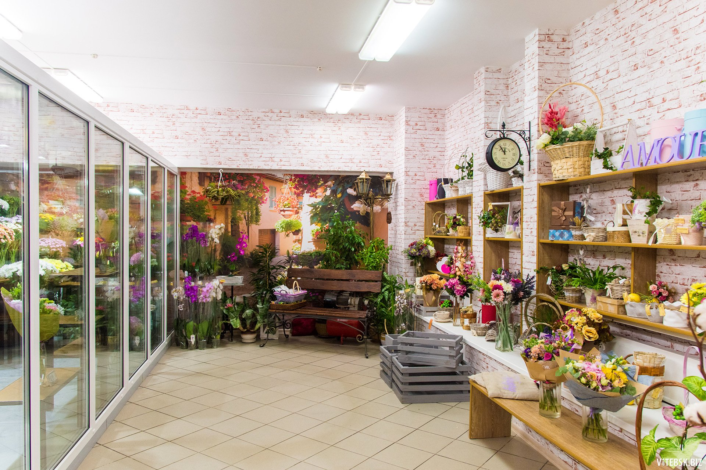
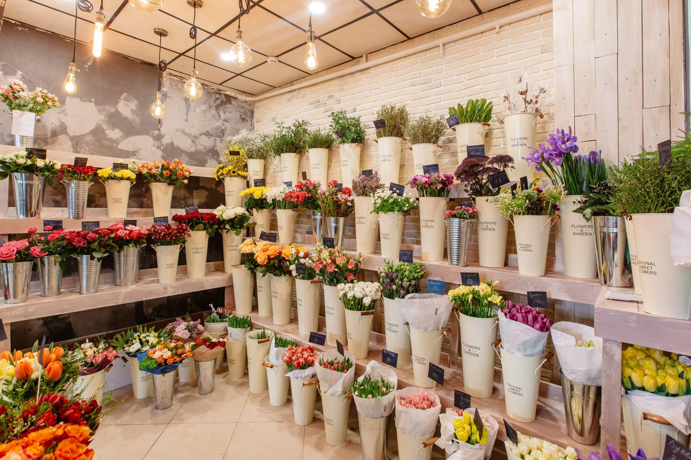
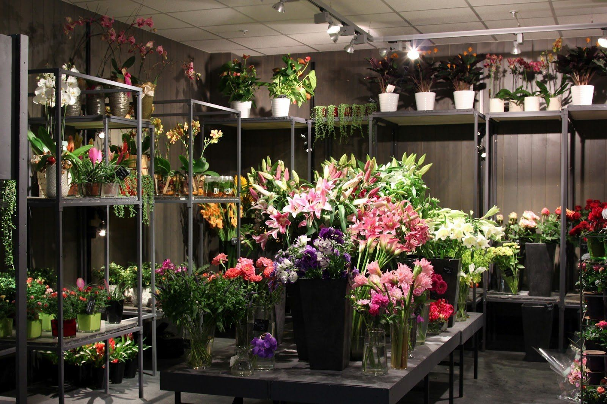

О нашей компании
Согласитесь, сложно себе представить нашу жизнь без цветов. Мы украшаем зелеными растениями свой дом, дарим цветы на всевозможные торжественные и дружеские, официальные и не очень события, и такому подарку всегда рад и даритель, и одариваемый. Вне всякого сомнения, это целый мир со своими правилами и законами, с уникальной эстетикой и дыханием самой природы.
Мы шагаем рука об руку с этим миром и пока нет ровным счетом никаких предпосылок, чтобы от него отказаться. Скорее, напротив, мы всегда хотим получить или подарить букет чаще и чаще. А уж доставка цветов, и вовсе является услугой, которая существенно облегчает жизнь мужчинам: можно легко и быстро порадовать любимую женщину, затратив при этом минимум усилий.

Есть удивительное место, в котором можно воплотить в жизнь любые Ваши фантазии в оформлении букетов. Это специализированный салон цветов. К услугам салона обращаются не только те, кто хочет преподнести любимой девушке розу на свидании или порадовать юбиляра роскошным букетом. Салон цветов специализируется на составлении необычных букетов из живых растений и сухоцветов, а также элементов декора. Именно здесь составляют свадебные букеты и занимаются оформлением цветами для какого-либо торжества. Словом, каждый важный момент в жизни или даже обычный день может сопровождаться цветами – достаточно просто этого захотеть.
Современный салон цветов отличает индивидуальный подход к каждому клиенту: Вы можете быть уверены, что Ваш букет уникален и в нем воплощены все Ваши мысли и пожелания касательно декора. Разумеется, качество исполнения заказов всегда безукоризненно, поскольку в этой сфере трудятся профессиональные флористы, для которых работа является абсолютно творческим процессом. Глядя на некоторые букеты – а некоторые из них являются подлинными произведениями искусства – понимаешь, что флорист вложил в свое творение часть души. К этому просто нельзя остаться равнодушным! Естественно, все течения современной флористики или классических техник могут быть включены в оформление по Вашему желанию.

Часто в салон цветов обращаются и за горшечными растениями – они являются не только отличным подарком, но и меняют атмосферу в доме, создавая ощущение комфорта и уюта. Кроме того, зеленые растения в помещении укрепляют «легкие» нашего жилища.
Разумеется, все это возможно только в том варианте, когда Вашему вниманию представлен широкий выбор всевозможных свежих цветов самых неожиданных оттенков и, что немаловажно, в широком спектре цен на продукцию. Важно помнить, что после покупки, цветы, как правило, нуждаются в уходе, пусть и минимальном. Специалисты всегда подскажут и подробно расскажут при необходимости о том, как правильно ухаживать за цветами и букетами, тем самым продлевая им жизнь. Современный салон цветов предлагает различные варианты оплаты, что подчас является отличным подспорьем.

Значимым атрибутом хорошего магазина является такая услуга, как доставка цветов. Как мы уже говорили выше, эта услуга позволяет принести максимум радости любимому человеку, затратив минимум усилий. Доставка цветов давно уже стала неотъемлемой составляющей любого праздника, но вместе с тем посредством такой услуги можно и самый обычный рабочий день превратить в праздник!
Общение с миром цветов – это не только букеты по большим праздникам и растения на окне. Это уникальная возможность, значение которой сложно переоценить – возможность прикосновения к прекрасному. И в наших силах сделать эту возможность доступнее, масштабнее и ярче.

Мы на карте
Цветы
всегда хорошая идея